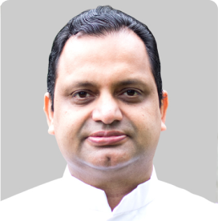
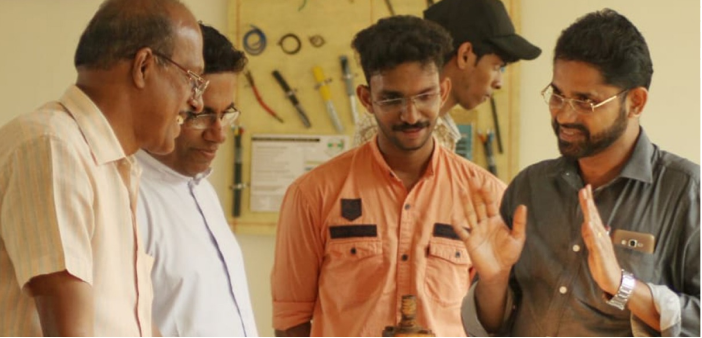
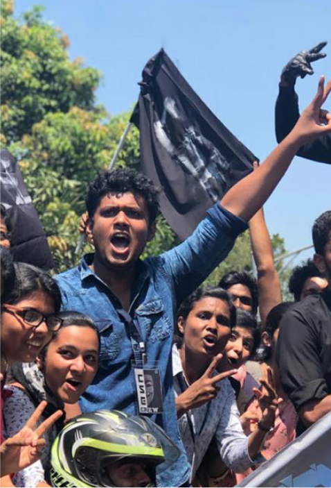

<!-- <!DOCTYPE html>
<html lang="en">
    <head>
        <meta charset="UTF-8" />
        <meta http-equiv="X-UA-Compatible" content="IE=edge" />
        <meta name="viewport" content="width=device-width, initial-scale=1.0" />
        <title>Document</title>
        <link rel="stylesheet" href="./css/style.css" />
    </head>
    <body>
        <header>this is header</header>
        <section id="spotlight">
            <h2>Faculty & Staff</h2>
        </section>
        <section id="Faculty">
            <section class="wrapper">
                <div class="top-card">
                    <h2>Faculty</h2>
                    <p>Home / Faculty</p>
                </div>
                <section class="Faculty-container">
                    <div class="left-card">
                        <div class="menu-container">
                            <a href="#">
                                <span class="image">
                                    
                                </span>
                                Central Library
                            </a>
                            <a href="#">
                                <span class="image">
                                    
                                </span>
                                Computer Center
                            </a>
                            <a href="#">
                                <span class="image">
                                    
                                </span>
                                Canteen
                            </a>
                            <a href="#">
                                <span class="image">
                                    
                                </span>
                                Language Lab
                            </a>
                            <a href="#">
                                <span class="image">
                                    
                                </span>
                                Auditorium
                            </a>
                            <a href="#">
                                <span class="image">
                                    
                                </span>
                                Amphitheater
                            </a>
                        </div>
                    </div>
                    <div class="right-card">
                        <h1>Faculty & Staff</h1>
                        <p class="description">
                            Department of Computer Science & Engineering started
                            in 2015 in Christ College of Engineering, which
                            offers the undergraduate (B. Tech.) course. The
                            annual intake of the B. Tech. program is 60 students
                            and it is affiliated to Dr. A P J Abdul Kalam
                            Technological University. We provide excellent
                            infrastructure facilities with well-equipped
                            computer labs, smart classrooms, digital library and
                            language lab. We also have high speed leased line
                            Internet connection and online access to all IEEE
                            journals. The Department has an excellent team of
                            committed and qualified faculty members encouraging
                            and guiding students in their academic as well as
                            personal development.
                        </p>
                        <div class="staffs">
                            <div class="staff">
                                <div class="image">
                                    
                                </div>
                                <p class="name">Rev. Fr. Davis Panakkal</p>
                                <p>Trust President</p>
                                <p>Provincial, CMI Devamatha Province</p>
                            </div>
                        </div>
                    </div>
                </section>
            </section>
        </section>
        <section id="gallery">
            <div class="images">
                <div class="image">
                    
                </div>
                <div class="image">
                    
                </div>
            </div>
        </section>
    </body>
</html> -->
